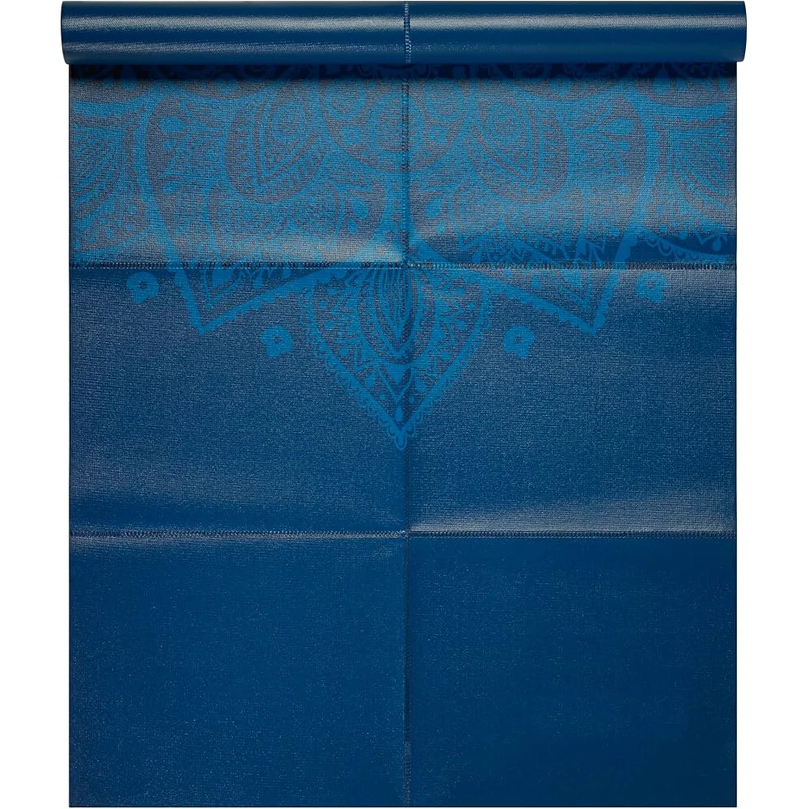

A foldable travel yoga mat that folds flat instead of rolling, so it packs into a suitcase, carry-on or tote. Two builds: a thin 2 mm PVC mat for the lightest pack, or a 6 mm TPE mat for more cushioning. The fold lines are formed with a heat-pressed crease process that strengthens the mat where it folds.
| Material | 2 mm PVC or 6 mm TPE |
|---|---|
| Fold lines | Heat-pressed creases that reinforce the fold areas |
| Size | Confirmed at quote |
| Thickness | 2 mm (PVC) or 6 mm (TPE); final spec confirmed at quote |
| Material grade | Confirmed at quote |
| Colour | Confirmed at quote |
| Print / pattern | Confirmed at quote |
| Logo | Confirmed at quote |
| Carry bag & packaging | Confirmed at quote |
| MOQ | TPE: 100 pcs per design per colour; PVC: confirmed at quote |
| Sample | On request |
| Bulk lead time | Confirmed at quote |
| Price | On request |
Travel mats are bought by people who practise in hotel rooms, at retreats, at the office or on the road, and who do not want a bulky roll. This mat folds into panels along pressed fold lines and stacks flat. We make it in two builds. The 2 mm PVC version is thin and light for packing; the 6 mm TPE version gives more cushioning under knees and wrists while still folding flat. The fold lines are made with a heat-pressed crease process, which forms each crease during production and reinforces the material at the fold rather than leaving it to bend at random. Size, thickness, colour, all-over print, logo and packaging, including a drawstring carry bag, are built to your specification and confirmed with your quote and sample.
Factory-direct OEM/ODM since 2013: custom logo, colour and packaging on every order. Sampling and bulk lead time are confirmed at quote, price on request — first reply within 2 hours on working days.
Travel and hotel-room practice, yoga retreats and holiday classes, office and commuter workouts, gym-bag mats, and gift or subscription boxes. Suited to yoga and travel brands, online sellers, studios and retreat operators, and promotional buyers.
Get a tailored quote today — sampling and lead time confirmed with your quote.
Contact Our Team